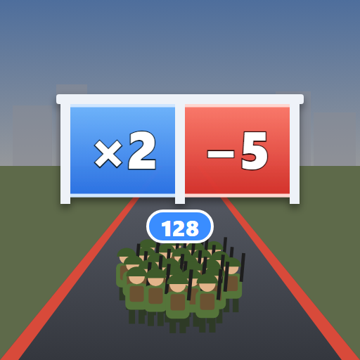
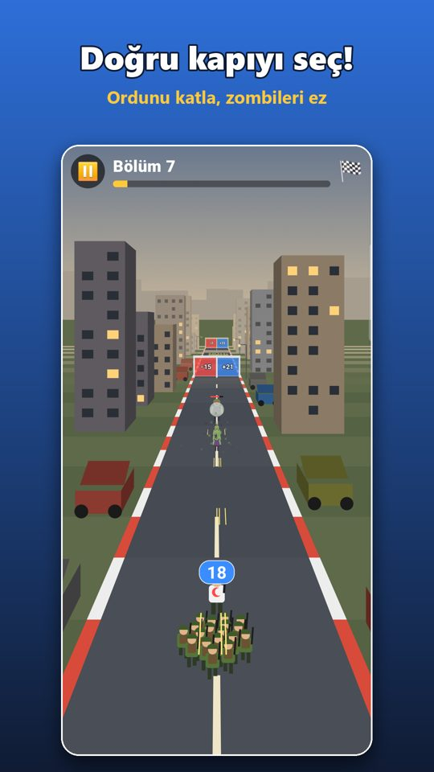

KAPI SAVAŞI
Doğru kapıyı seç, ordunu büyüt!
100 bölüm · 10 bölge · zombi boss'ları · ücretsiz
▶ Google Play'den indir Açılmazsa buraya dokunOyun şimdilik yalnızca Android'de var.


Doğru kapıyı seç, ordunu büyüt!
100 bölüm · 10 bölge · zombi boss'ları · ücretsiz
▶ Google Play'den indir Açılmazsa buraya dokunOyun şimdilik yalnızca Android'de var.
